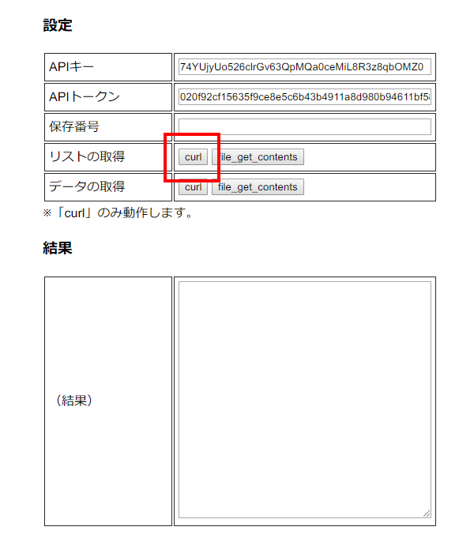
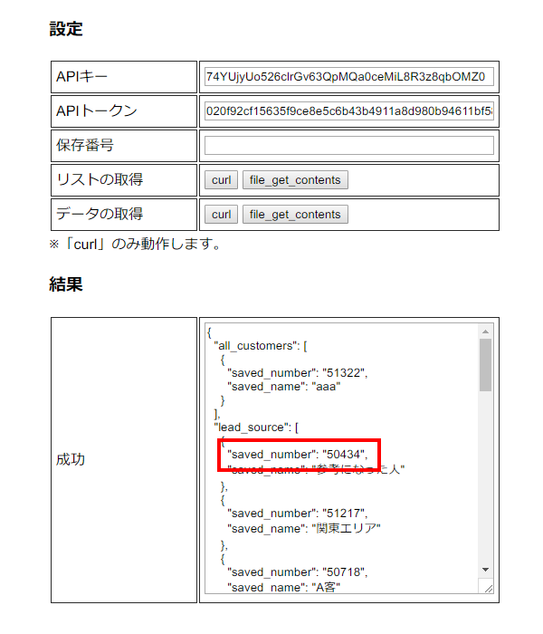
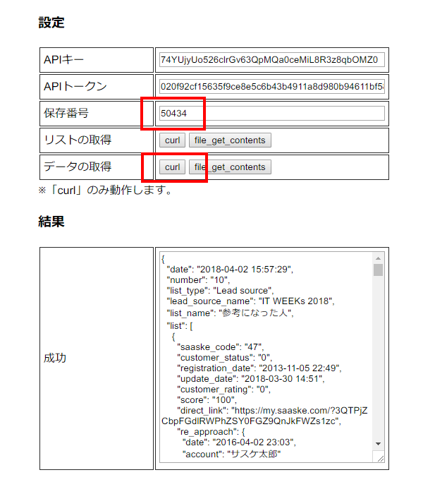

サスケAPI - デモページ
デモページを開く
使い方
①
「リストの取得」の「curl」をクリックすることで「検索条件の保存リスト」＆「保存番号」を一覧で取得できる。

②
「saved_number」の横に書かれている数字が「保存番号」になるので、これをコピーする。

③
コピーした数字を「保存番号」へ貼り付けて「データの取得」の「curl」をクリックすることで「検索条件にヒットする顧客一覧」情報が取得できる。

注意点
- ①と③で表示されている英字については「APIドキュメント＞サスケ Lead＞レスポンス」に全て説明されています。
- 保存番号「45197」のように500件を超えるデータは501件移行切り捨てで表示される。また社内のWi-Fi下でも取得に5秒ぐらいかかるので注意すること。
- 「curl」は「カール」と読みます。【cURL - Wikipedia】
- curlとfile_get_contentsの違いは「データの取得方法が少し違うだけ」です。サスケには関係ありません。